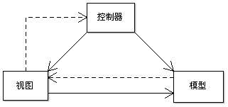
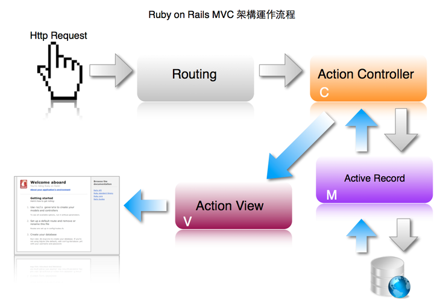
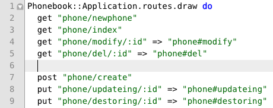
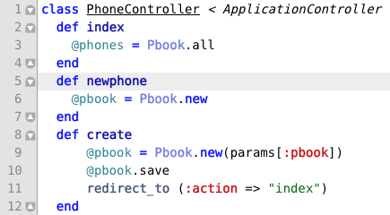
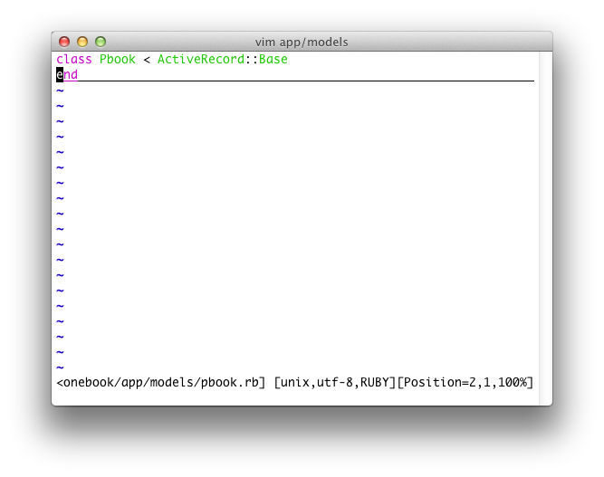
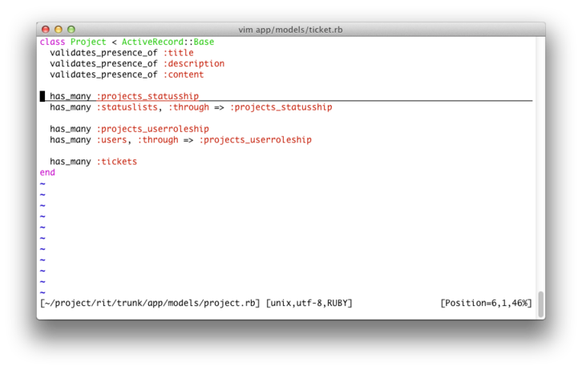
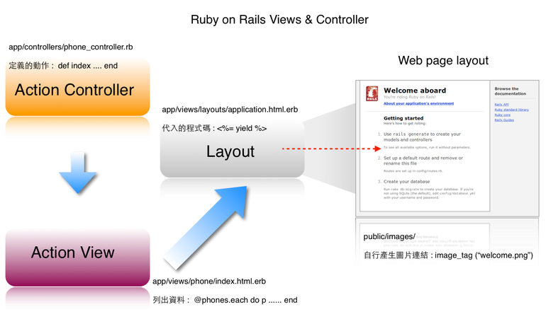
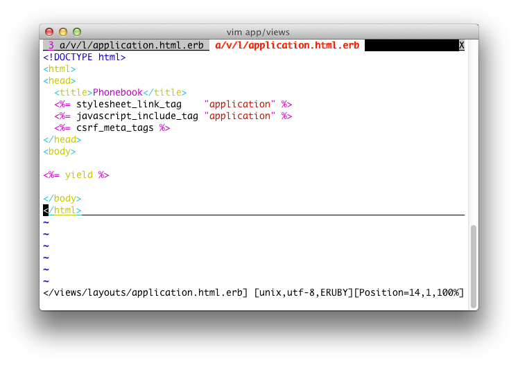
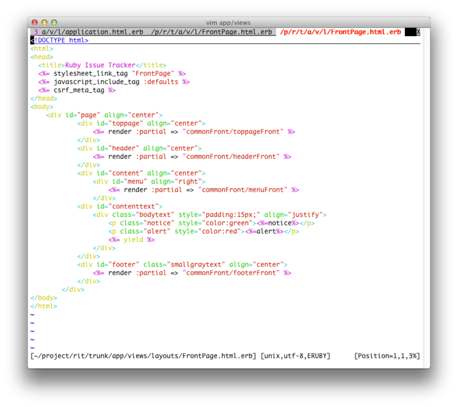
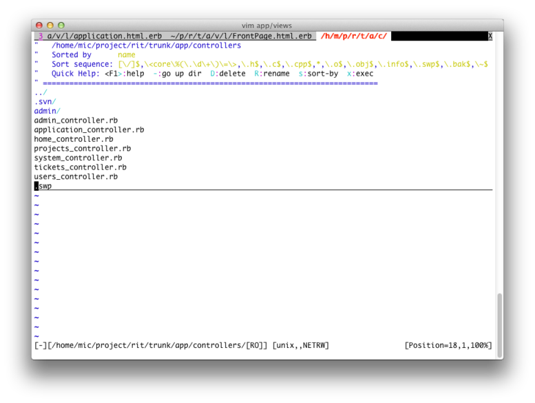

也紀念我們永遠的朋友 李士傑先生（Shih-Chieh Ilya Li）。
麥克阿忠的 Ruby on Rails 實務─熟悉 MVC
前言
相信讀者在前篇文章依照內容操作一遍後，對於 CRUD 的應用邏輯與設計，以及 RoR 的架構都有了些許認識。只要多加實做，將會覺得 Rails 開發的作業時間短得不可思議。
Ruby on Rails 是一套架構很完善的 MVC Framework，這樣的開發架構可有效分隔出程式模組之間共同的資料傳遞方式，以及階層的物件概念，讓開發專案能以共同的標準鑄造程式碼，未來也讓開發員在進行維護與修正程式時容易閱讀。
什麼是 MVC
MVC 是一個軟體工程概念，意指 Model（模型）、View（檢視）、Controller（控制器）三個基本區塊。
▲ 圖1：MVC 架構的概觀（圖片來源：https://upload.wikimedia.org/wikipedia/commons/f/f0/ModelViewControllerDiagramZh.png）
- Model
資料模型，針對資料傳遞的邏輯方法與接受資料的操作處理方式。簡單說來是對於資料庫中的資料進行初始化，並等待接受其它區塊的指派再進行資料的處分。
- View
檢視，與使用者介面互動的區塊，有些框架會將程式碼與 HTML 混雜，一方面需要靠迴圈列印出資料，一方面需要依功能、操作性產生表單等等的界面。
- Controller
控制器，控制某段程式碼的流程運作。控制器會針對各種要求進行事件的傳遞或是處理方法，去向Model連結資料，再將結果傳遞至View。
為什麼要用 MVC
MVC 架構可運用於大型的多人開發專案，讓開發中人員能專精某個區塊，例如不需要顯示畫面的程式碼，只要在 Model 中撰寫即可。專精網頁 UI 的開發者可在 View 修改頁面，適合安全性內部的相關處理即可在 Controller 定義相關的程式碼。區塊的分隔讓開發員彼此間不會受到檔案被編修的干擾。
Rails MVC 的架構原理
第一篇文章中筆者提過 Rails 的 MVC 實際架構，在這裡重述一次加深讀者對此架構的印象。
▲ 圖2：Ruby on Rails MVC 架構與運作流程
- Route.rb 的應用方法詳解
圖 2 為流程示意圖。當使用者發出 Request 時，程式開始處理事件觸發的運作，從網址列的 Request 發送至 Routing 關卡，再由 Route.rb 的查表方式指定至某個 Action Controller。
例如在上篇的範例中網址為 https://localhost:3001/phone/index，則在 route.rb 裡頭就會有一行 get "phone/index" 的路由設定。
因此 RoR 就會到 app/controller/phone_controller.rb 程式碼中定義的 index 程式碼區塊執行指令。
如下圖 3 與圖 4 的範例：
▲ 圖3：route.rb 的設定
▲ 圖4：action controller 所定義的 actions
由於現階段 Web 應用的 app 已被廣泛使用，再加上 Window form 的桌面程式設計入門困難，且有系統平台相容性的問題，因此許多 web 應用框架會在網址列加入 route 的功能應用，一方面為求 SEO，另一方面也是避免安全性的問題。未來傳統的網址參數傳遞方式將會式微。
該如何有效的運用 Route 功能？
RoR 在 Route 操作上實踐了 RESTful 的理論，因此在 CRUD 流程中可以依照慣例自動定義 URI 發出 Request 的動詞。這些動詞出自於將 POST、GET、PUT、DELETE 對應到資料的新增、讀取、更新、刪除四項操作。將 HTTP 動詞納入考慮後，我們再參考圖 3 所定義的 route 如下：
POST /phones 對應到 Controller 中的 create action
GET /phones/1 對應到 Controller 中的 show action
PUT /phones/1 對應到 Controller 中的 update action
DELETE /phones/1 對應到 Controller 中的 destroy action
按照慣例，你的 coltroller 名稱本來是單數的 phone，要轉化成 RESTful，最好的方式是變成複數 phones 來命名。若讀者已經按照前篇的範例實作，請砍掉重練。
在 route.rb 加上這一行程式碼：
resources :phones
這個 route 就會定義出以下七個 Action：
get '/phones' => "phones#index", :as => "phones"
post '/phones' => "phones#create", :as => "phones"
get '/phones/:id' => "phones#show", :as => "phone"
put '/phones/:id' => "phones#update", :as => "phone"
delete '/phones/:id' => "phones#destroy", :as => "phone"
get '/phones/new' => "phones#new", :as => "new_phone"
get '/phones/:id/edit' => "phones#edit", :as => "edit_phone"
這七個路由可以先移除，只留下 resources:phone，就會發現這些定義非常方便實用。這七個 Action 方法的方法名稱，是 Rails 本身定義好的，無法修改，你可以這樣記：
show、new、edit、update、destroy 是單數，對單一筆資料操作
index、create 是複數，對群體資料操作
event_path(@phone) 需要參數，根據 HTTP 動作判定 show、update、destroy
events_path 不需參數，依照 HTTP 動作判定 index、create
而用了 RESTful 之後，其影響是表單所使用的 form_for、link_to 與 redirect_to 會修改成如下：
phone_path(@phone), :method => :put do |f| %>
並且只需記得 resources 就能寫出 URL Helper，
[custom route]_phone[s]_path( phone ), :method => GET | POST | PUT | DELETE
可以不必再寫成如下的手動路由指定方式，
link_to phone.name, :controller => 'phones', :action => :show , :id =>phone.id
實際上 Routing 不是 MVC 一定會用到的技術，但 RoR 是個 Web framework，所以路由在此就會變得比較重要，本篇的重點是在 RoR 的 MVC 架構下說明，因此 Routing 就必須納入說明。
Model 模組
在撰寫程式的過程中，有經驗的工程師會將重複利用的程式碼另外封裝成模組，好讓程式在運作時直接以一行流的方式跑完十行的程式碼。
而在 RoR 中的 Model 大都是連結資料庫，並且在服務開始之後就會初始化資料表，將每個欄位載入成物件操作或是方法，因此在 phone 的範例中，可以在 app/model/pbook.rb 看到這個檔案，若沒有任何相關的特別設定，它通常會保留空白，然後就可以用 Phone.find(id) 的操作以 puts Phone.name 的方法把姓名印出。
通常在 RoR 中的 ActiveRecord 區塊就是 Model 的應用類別。
▲ 圖5：如果沒有特別的資料表關聯設定一般說來都保持這兩行的狀態
▲ 圖6：若在資料表之間有關聯的狀況，或是需要轉換常數與變數的的程序，大多會在這裡設定
所以如圖 5 與圖 6 的慣例，程式設計師若對於資料庫的關聯很專精，就會在這個區塊撰寫與資料表處理、關聯相關的程式碼。
- View 檢視
大部分的 web 應用程式一定會有一套完整的 UI 以供使用者操作，包含能控制鍵盤、滑鼠、螢幕繪製的項目。在 RoR 中，View 的區塊相當常見，而控制 View 相關畫面呈現的是靠 Action Controller 接受 Route 參數再繪製出 View。
另外，在其它篇被忽略的 Layout 是 RoR 中利用 View 的方式，以 ActionName.html.erb 帶入至 app/views/layouts/application.html.erb，並以 繪製出完整的畫面。
▲ 圖7：RoR 輸出頁面的關係
在 app/views/layouts/application.html.erb 之中即有完整的 標籤，所以重視美工外觀的 HTML 設計人員就可以從這裡編修網頁美工，而圖片的路徑一律放在 /public/images，再使用 images_tag() 的內建函數產生連結圖片的標籤。
一般說來，這樣的關係是利用 Partial（局部樣板）的觀念拼湊出一張網頁，所以如果是一系列統一的網頁版型，通常只要修改 application.html.erb 檔案即可。
下圖範例中，資料都在 "body" 與 "/body" 之間變化，只要用 yield 這個內建的函數即可讓程式共用這一型的版面。
▲ 圖8：application.html.erb 完整的 HTML 範例
如果還想在每一頁網頁的版頭放置登入狀態的功能，你可以在 application.html.erb 使用 "common/PartName" %>，那麼所建立的檔案名稱路目錄就在 app/views/common/_partName.html.erb，若有很多局部樣板需要共用的話，那麼未來這個 application.html.erb 大概就會長成下圖。
▲ 圖9：整個樣板 application.html.erb 套入多個局部樣板的程式碼
- Controller 控制器
RoR 的 Controller 扮演最重要的角色。它一方面接受由 Route 分析出來的路由，以決定哪個控制器該被執行，讓控制器執行某個動作，也就是在 app/controller 中 AppName_controller.rb 被定義的 Method。另一方面 Controller 也要和 Model 傳遞資料，以及跟 Views 處理輸出，看起來它相當忙啊。
有時一個專案在 app/controller/ 不一定只有一個控制器，所以就要在路由個別為它設定導引的描述。如下圖，
▲ 圖10：多個控制器的 RoR 專案
▲ 圖11：RoR 定義的 Actions
不過這個 Controller 的運作方式還是必須搭配 Route 一起說明，因此在這一段還是拿 Route 來補充。
如何知道該執行哪個控制器跟動作？如果網址如下：
https://localhost/shopping/computer/info/12333
那麼在 RoR 裡程式流程如下：
- 選擇 app/controller/Shopping_controller.rb 的控制器。
- 執行 Shopping_controller.rb 裡已定義 info 的動作。
- 由 info 所設計的程式碼，並將 id:12333，向 app/model/computers.rb 取出資料庫名為 computers 資料表中的資料。
- 將資料初始化之後由 Shopping_controller.rb 中的 info 動作，把 12333 的資料傳遞至 app/views/shopping/info.html.erb。
- 最後該控制器會把 info.html.erb 產生的結果整入至樣板 app/views/layouts/applications.html.erb 以完成整個網頁的輸出。
若要做出「將商品放入購物車」，網址大致如下：
https://localhost/shopping/cart/12333
結帳之後會是：
https://localhost/shopping/checkout
所以在 shopping_controller.rb 裡就會定義 cart 跟 checkout 的動作。而在 views 裡就會有 cart.html.erb 跟 checkout.html.erb 的局部頁面。
以上 RoR 的 MVC 就介紹到此，相信經過這樣有條理的說明，讀者們可以更加明暸它們之間的運作關係，也更容易導入設計專案時所相關連的檔案路徑，讓開發RoR的歷程不再困難重重。
作者簡介
麥克阿忠，資深網站程式開發者，興趣是攝影。目前擔任 Ruby on Rails 網站開發員，主要使用 Ubuntu Server 進行 Web 應用程式開發。
作者部落格 https://about.me/MichaelChen520
歡迎對 Ruby 有興趣的同好前來交流指教。
您也許有興趣閱讀以下文章:
- 麥克阿忠的 Ruby on Rails 真功夫─手刻 CRUD - 2011-10-13
- 麥克阿忠的 Ruby on Rails 特快車－Scaffold 篇 - 2011-09-05
- 麥克阿忠的 Ruby on Rails 初探 - 2011-08-03
專欄總覽


E-Mail：contact@openfoundry.org Address：台北市南港區研究院路2段128號 中央研究院資訊科學研究所 . 隱私權條款. 使用條款